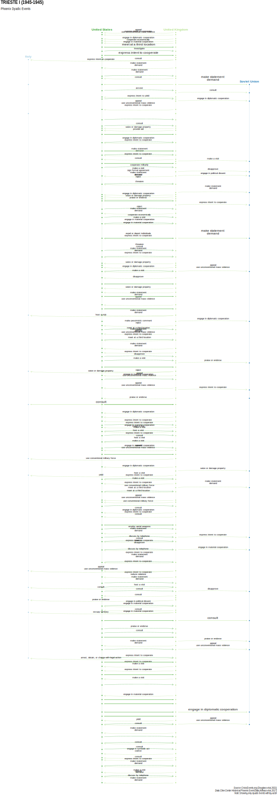

ICBe Crises 96-111
- 96 Iran-Oil Concessions (1944-1944)
- 97 Leyte Campaign (1944-1944)
- 98 Greek Civil War I (1944-1945)
- 99 Luzon (1945-1945)
- 100 Final Soviet Offens. (1945-1945)
- 101 Iwo Jima (1945-1945)
- 102 Communism In Romania (1945-1945)
- 103 Okinawa (1945-1945)
- 104 Trieste I (1945-1945)
- 105 French Forces/Syria (1945-1945)
- 106 Kars-Ardahan (1945-1946)
- 107 Hiroshima-Nagasaki (1945-1945)
- 108 Azerbaijan (1945-1946)
- 109 Indonesia Indep. I (1945-1947)
- 110 Communism In Poland (1946-1947)
- 111 Turkish Straits (1946-1946)
Back to Main Page.
View Crises 1-15; 16-31; 32-47; 48-63; 64-79; 80-95; 96-111; 112-127; 128-143; 144-159; 160-175; 176-191; 192-207; 208-223; 224-239; 240-255; 256-271; 272-287; 288-303; 304-319; 320-335; 336-351; 352-367; 368-383; 384-399; 400-415; 416-431; 432-446; 447-461; 462-476;
96 Iran-Oil Concessions (1944-1944)

ICBe Narrative
id | sentence | codings_sentence |
96.1 | A crisis for Iran over Soviet demands for oil concessions took place from 26 September to 9 December 1944. | No events. |
96.2 | Background and Pre-crisisContrary to the tripartite treaty of 1942, the USSR showed signs of continuing its occupation in order to keep northern Iran and its oil resources within the sphere of Soviet influence. | Soviet Union experienced a desire about act in this sentence. Iran initiated economic cooperation;unspecified cooperation toward Soviet Union. |
96.3 | At that time there were only two authorized oil concessionaires in Iran: the Anglo-Iranian Oil Company in the southwest; and the Kavir-i-Khurian Company near Seronan, owned jointly by the Soviet Union and an Iranian group. | No events. |
96.4 | The publication in August 1944 of a general Anglo-American agreement for oil concessions in the southeast aroused criticism by the communist-dominated Tudeh Party in a Majlis debate and disturbed the Soviets to the extent that they decided to revive their claims to oil concessions in northern Iran. | Soviet Union experienced a desire;policy about act in this sentence. Soviet Union initiated demand toward |
96.5 | A crisis for Iran was triggered on 26 September 1944 when the Soviet Assistant People's Commissar for Foreign Affairs, Kavtaradre, during a visit to Teheran, demanded oil concessions in five northern Iranian provinces. | Iran experienced a start of crisis about speech in this sentence. Soviet Union initiated demand toward |
96.6 | The Soviet demand was viewed by nationalist elements in Iran's government as being detrimental to Iran's national interests, as well as an infringement upon Iran's sovereignty. | Iran experienced a become convinced about act in this sentence. Soviet Union initiated assert political control over;violate terms of treaty toward Iran. |
96.7 | Iran's response was a decision to reject all demands for oil concessions. | Iran initiated reject toward |
96.8 | Whereas Britain and the United States accepted the Iranian decision, the USSR rejected it and questioned the integrity of Iran's Prime Minister Sa'id. | United Kingdom;United States of America initiated accept toward |
96.9 | This was followed by a violent press campaign by the Tudeh Party attacking Sa'id's policies and demanding his resignation. | Iran initiated protest |
96.10 | The campaign led to mass demonstrations in Teheran and other cities against Sa'id. | Iran initiated protest |
96.11 | In Teheran, Soviet army trucks carried considerable numbers of Tudeh Party members to a demonstration in front of the Majlis, while Soviet army detachments with tanks protected the demonstrators against any counteraction by Iranian troops. | Soviet Union initiated blockade;deployment to area;show of force toward Iran. Soviet Union initiated general political support;military cooperation;unspecified cooperation |
96.12 | The presence of Soviet troops paralyzed any activity on the part of the Iranians. | No events. |
96.13 | Sa'id resigned on 8 November and a new government was formed by Mortera Quli Bayat. | Iran initiated leadership change |
96.14 | This new government was also attacked by the Tudeh Party in demonstrations and through the press. | Iran initiated protest |
96.15 | On 2 December the Majlis passed a law forbidding any minister to grant or negotiate oil concessions with foreign governments without parliamentary approval. | Iran experienced a policy about act in this sentence. Iran initiated break off negotiations;end economic cooperation toward Soviet Union. Iran initiated restrict rights |
96.16 | The crisis ended when Kavtaradre and his delegation left Iran for Moscow on 9 December 1944. | Iran experienced a end of crisis about act in this sentence. Soviet Union initiated natural conclusion of diplomacy;withdraw diplomats toward Iran. |
96.17 | Iran, which had looked toward the U.S. as a friendly third power, was disappointed that Washington did not openly oppose Soviet claims. | Iran experienced a policy about act in this sentence. |
96.18 | The League of Nations did not function in 1944. | No events. |
ICB Dyadic Crisis Map

Wikipedia Page
97 Leyte Campaign (1944-1944)

ICBe Narrative
id | sentence | codings_sentence |
97.1 | The U.S. invasion of Leyte in the Philippines created another IWC for Japan from 20 October to 26 December 1944. | No events. |
97.2 | Pre-crisisThe Japanese anticipated an early U.S. attempt to retake the Philippines; and in the summer of 1944 they began developing defense plans that included air and navy support. | No events. |
97.3 | By September 1944 Japan had suffered serious reverses on both military and diplomatic fronts. | No events. |
97.4 | On 20 October 1944 the advance units of the largest amphibious operation of the Pacific war landed on the island of Leyte. | United States of America initiated invasion/occupation toward Japan. |
97.5 | This began the campaign for the reconquest of the Philippines, triggering a crisis for Japan: Tokyo perceived a strategic threat to the home islands if the Philippines fell to the Americans. | Japan experienced a fear;fear;start of crisis;start of crisis about sentence 4. |
97.6 | In the last major naval battle of World War II, the Japanese navy suffered a loss of 40 ships sunk, 46 ships damaged, and 405 planes destroyed. | Japan initiated battle/clash toward United States of America. United States of America initiated battle/clash toward Japan. |
97.7 | On land the scope of the campaign is evident in the casualties on Leyte: more than 15,000 Americans and more than 50,000 Japanese. | No events. |
97.8 | The Philippines had been earmarked by Japan as the first in a series of decisive battles that was slated to end in Japan's overwhelming triumph. | No events. |
97.9 | When the army agreed to concentrate its forces in a bold effort to rout the Americans, Prime Minister Koiso and the Japanese people were led to believe that a Japanese victory in Leyte would turn the tide of the war. | No events. |
97.10 | Japan's response, on 24 October, was to withdraw its fleet from Philippine waters once they had failed to halt the Leyte invasion. | Japan initiated withdraw from area toward United States of America. |
97.11 | After the defeat Japan no longer had a fleet or air force that could mount an offensive. | No events. |
97.12 | Japan was losing planes and pilots faster than they could be replaced. | No events. |
97.13 | On 24 November the first large-scale B-29 raid on Japan began. | United States of America initiated bombard toward Japan. |
97.14 | This destroyed major Japanese aircraft factories. | No events. |
97.15 | On 26 December the U.S. announced the successful completion of the Leyte campaign, granting control of the Pacific to the Allies, and ending Japan's IWC in total defeat. | Japan experienced a end of crisis about speech in this sentence. United States of America initiated praise toward |
ICB Dyadic Crisis Map

Wikipedia Page
98 Greek Civil War I (1944-1945)

ICBe Narrative
id | sentence | codings_sentence |
98.1 | A crisis for the U.K. over Greece lasted from 3 December 1944 to 15 January 1945. | No events. |
98.2 | BackgroundAfter the withdrawal of the German occupation forces from Greece in October 1944, there was an intense struggle for power among Greece's political factions. | Germany initiated withdraw behind border toward Greece. |
98.3 | The British, who were determined to impose a settlement that would ensure stability and their strong presence in the country, were in direct opposition to Greece's Communists. | United Kingdom experienced a policy about act in this sentence. United Kingdom initiated sign formal agreement toward Communist Party of Greece;Greece. |
98.4 | The Caserta Agreement, signed on 20 September 1944, called for all guerrilla forces in the country to be placed under Greek government command, headed by British General Scobie. | Communist Party of Greece initiated promise toward |
98.5 | The crisis trigger for the U.K. was an exchange of fire between Greek Communist demonstrators and the police on 3 December 1944. | United Kingdom experienced a start of crisis about act in this sentence. Communist Party of Greece initiated attack toward Greece. United Kingdom experienced a start of crisis about act in this sentence. Greece initiated human rights violation;protest;riot |
98.6 | This touched off a violent civil war that was perceived by Britain as a threat to its influence in the international system. | No events. |
98.7 | More specifically, a communist takeover in Greece would virtually end all British influence in the region. | United Kingdom experienced a fear about act in this sentence. Greece initiated surrender toward Communist Party of Greece. United Kingdom experienced a fear about act in this sentence. Greece initiated coup |
98.8 | Prime Minister Churchill responded the next day by ordering General Scobie to intervene with his forces and to open fire if necessary. | United Kingdom experienced a policy about act in this sentence. United Kingdom initiated military cooperation toward Greece. |
98.9 | Churchill flew to Athens on 24 December in an effort to bring the various factions together and settle the crisis. | United Kingdom initiated meeting toward Greece. |
98.10 | In the course of serious clashes, British and Greek troops succeeded in driving the Greek Communists out of Athens. | United Kingdom;Greece initiated attack toward Communist Party of Greece. Communist Party of Greece initiated retreat toward United Kingdom;Greece. |
98.11 | The U.K.'s crisis ended on 15 January 1945 with the implementation of a truce agreement. | United Kingdom experienced a end of crisis about act in this sentence. Greece initiated cease fire;cease fire;sign formal agreement;sign formal agreement toward Communist Party of Greece. |
98.12 | The United States was not active in this crisis, though Churchill and Roosevelt corresponded regularly. | No events. |
98.13 | State Department criticism of British intervention was viewed unfavorably by Churchill. | United States of America initiated disapprove toward |
98.14 | On the other hand, USSR inactivity was viewed favorably because it meant that Stalin was living up to the terms of the "spheres of influence" agreement struck at an earlier meeting in Moscow. | No events. |
98.15 | The civil war in Greece erupted into another crisis for Britain in 1946. | No events. |
98.16 | The League of Nations was moribund by 1944-45. | No events. |
Phoenix Crisis Map

Wikipedia Page
99 Luzon (1945-1945)

ICBe Narrative
id | sentence | codings_sentence |
99.1 | Following the American victory at Leyte, the U.S. invasion of Luzon created another IWC for Japan from 9 January to 3 March 1945. | No events. |
99.2 | Pre-crisisAfter the defeat at Leyte, Japan's political and military leaders concentrated their hopes for victory on Luzon. | No events. |
99.3 | As the situation deteriorated in the Philippines, the emperor called a meeting of the Jushin on 6 January 1945 to seek their advice on the future course. | No events. |
99.4 | While the Japanese military had already lost the war, some of the Jushin advised, Japan's spirit could not be destroyed. | No events. |
99.5 | For want of a better solution, they now proposed a concentration of forces against the U.S. in the hope that a victorious battle would permit Japan to end the war on more favorable terms. | No events. |
99.6 | On 9 January two corps of the U.S. Sixth Army invaded Luzon, triggering a new crisis for Japan. | Japan experienced a start of crisis about act in this sentence. United States of America initiated invasion/occupation toward Japan. |
99.7 | They had gained an element of surprise by selecting an undesirable part of the coastline for landing. | No events. |
99.8 | A combination of artillery, air bombardment, and the dogged advance of the U.S. infantry gradually led to progress. | No events. |
99.9 | Although the Japanese forces were cut off from retreat in Manila, they continued to refuse to surrender. | Japan initiated reject toward |
99.10 | Other U.S. forces sought to secure Manila Bay. | United States of America initiated battle/clash;invasion/occupation toward Japan. |
99.11 | Finally, on 3 March, the American occupation of Manila was completed, terminating this crisis for Japan. | Japan experienced a end of crisis about act in this sentence. United States of America initiated invasion/occupation toward Japan. |
ICB Dyadic Crisis Map

Phoenix Crisis Map

Wikipedia Page
100 Final Soviet Offens. (1945-1945)

ICBe Narrative
id | sentence | codings_sentence |
100.1 | An intrawar crisis for Germany in the East lasted from the beginning of the final Soviet offensive on 11 January until Germany's surrender on 7 May 1945. | No events. |
100.2 | This crisis overlapped with the German IWC over the continuing Allied advance in Western Europe in 1944-45. | No events. |
100.3 | Both ended with Germany's capitulation. | No events. |
100.4 | Pre-crisisThe campaign was planned by the Soviets as a separate and well-defined offensive. | No events. |
100.5 | The aim was to strike at the heart of the Third Reich. | No events. |
100.6 | The Russian homeland had been liberated from Nazi conquest by July 1944; and by 29 August Soviet forces had reached the border of East Prussia. | Soviet Union initiated deployment to area;mobilization Germany initiated withdraw from area toward Soviet Union. |
100.7 | At this point they halted and deliberately did not penetrate German territory. | No events. |
100.8 | Instead, they concentrated on the Baltic Peninsula and the Balkans. | Soviet Union initiated fortify;mobilization |
100.9 | These areas were liberated in October and December of 1944. | Germany initiated withdraw from area |
100.10 | In January 1945 the Soviets turned their full attention to the planning of a two-pronged attack, against East Prussia in the north and Silesia in the center. | No events. |
100.11 | An intrawar crisis for Germany was triggered on 11 January 1945 when the first part of the Soviet offensive began with a thrust from Poland into Silesia. | Germany experienced a start of crisis about act in this sentence. Soviet Union initiated invasion/occupation toward Germany. |
100.12 | For the first time Germany proper was threatened. | No events. |
100.13 | The German response was immediate: they used every means available in order to halt the Soviet advance. | Germany initiated battle/clash toward Soviet Union. |
100.14 | On 13 January the second Soviet thrust advanced from Lithuania into East Prussia. | Soviet Union initiated invasion/occupation toward Germany. |
100.15 | By 1 February East Prussia had been conquered, and the Soviets advanced into Silesia capturing a long and broad front inside the eastern border of Germany along the Oder River from Zehden in the north to Ratibor in the south. | Soviet Union initiated invasion/occupation toward Germany. |
100.16 | By the end of March they held the entire area of eastern Germany. | Soviet Union initiated assert political control over;invasion/occupation toward Germany. |
100.17 | On 25 April 1945 the Soviets entered Berlin. | Soviet Union initiated invasion/occupation toward Germany. |
100.18 | Meanwhile the Allies were advancing in western Germany, and the two armies met on the 25th. | Allies initiated invasion/occupation toward Germany. |
100.19 | Thereafter, both armies converged on those parts of Germany that had not yet been conquered until the Third Reich finally collapsed and surrendered on 7 May 1945 to the Allied and Soviet Commands. | Germany experienced a defeat;end of crisis about act in this sentence. Germany initiated surrender toward Soviet Union. |
ICB Dyadic Crisis Map

Phoenix Crisis Map

Wikipedia Page
101 Iwo Jima (1945-1945)

ICBe Narrative
id | sentence | codings_sentence |
101.1 | The Battle of Iwo Jima generated an intrawar crisis for Japan from 19 February to 16 March 1945. | No events. |
101.2 | Background and Pre-crisisIwo Jima, located among a group of volcanic islands midway between the Marianas and Japan, was of high strategic salience to the armies of both adversaries. | No events. |
101.3 | Japan used it as a staging base for damaging raids on U.S. B-29s in the Marianas; and the U.S. found it imperative to capture the island, destroy the air base, and establish a position 750 miles from Yokahama. | No events. |
101.4 | Iwo Jima received the longest and most intensive U.S. preinvasion bombardment of any objective in the Pacific war. | No events. |
101.5 | Regular air raids had begun in August 1944; and soon thereafter they were a daily occurrence. | United States of America initiated bombard toward Japan. |
101.6 | Nevertheless, Japanese defenses were not destroyed. | No events. |
101.7 | After the Fall of Saipan, the Japanese resolved to convert Iwo Jima into an impregnable fortress. | No events. |
101.8 | As the bombs fell, they dug deeper underground. | No events. |
101.9 | An IWC for Japan was triggered on 19 February 1945 when the U.S. launched a massive invasion of Iwo Jima. | Japan experienced a start of crisis about act in this sentence. United States of America initiated invasion/occupation toward Japan. |
101.10 | Firing from concealed points, the Japanese resisted the U.S. advance yard by yard in a stubborn and protracted battle that cost the U.S. 19,938 casualties, including 4,198 dead. | Japan initiated battle/clash toward United States of America. |
101.11 | On 8 March the Japanese began one of their most concerted counterattacks. | Japan initiated attack toward United States of America. |
101.12 | It caught the U.S. marines off guard. | No events. |
101.13 | They, in turn, rallied for a great flanking movement that pressed the Japanese back toward the sea. | Japan initiated retreat toward United States of America. |
101.14 | Japanese losses were very high. | No events. |
101.15 | The last phase of the battle began on 11 March with a more rapid U.S. advance. | United States of America initiated attack;invasion/occupation toward Japan. |
101.16 | On 16 March one of the last segments of opposition was pushed into a small region on the northern end of the island where the Japanese fought defiantly until the end. | Japan initiated battle/clash;retreat;withdraw from area toward United States of America. |
101.17 | Other pockets were eliminated, with difficulty. | No events. |
101.18 | The crisis for Japan ended in defeat on the 16th. | Japan experienced a defeat;end of crisis about act in this sentence. Japan initiated surrender toward United States of America. Japan experienced a defeat;end of crisis about sentence 16. |
101.19 | The following day the Americans raised the U.S. flag on the island of Iwo Jima. | United States of America initiated assert political control over toward Japan. |
ICB Dyadic Crisis Map

Phoenix Crisis Map

Wikipedia Page
102 Communism In Romania (1945-1945)

ICBe Narrative
id | sentence | codings_sentence |
102.1 | A crisis between the Soviet Union and Romania lasted from 24 February to 6 March 1945. | No events. |
102.2 | BackgroundThe Soviet August 1944 offensive against Germany prompted a palace revolt in Bucharest on 23 August 1944, and Romania became part of the Allied war effort against Germany. | Romania initiated join ongoing war toward Germany. |
102.3 | Predominant Soviet influence in Romania was recognized by the Allies in September 1944. | No events. |
102.4 | Following the palace coup there was a succession of governments. | No events. |
102.5 | Radescu was appointed Prime Minister in December 1944. | Romania initiated institutions change;leadership change |
102.6 | The domestic political situation during his tenure was very fluid, and the country became increasingly paralyzed between Right and Left. | No events. |
102.7 | Disturbances occurred in factories, with communist attempts to take over workshop committees. | Romania initiated protest |
102.8 | In February 1945 unrest steadily mounted, with violent criticisms in the Soviet media. | Romania initiated protest |
102.9 | The Romanian press was suppressed. | Romania initiated restrict rights |
102.10 | A Soviet crisis was triggered on 24 February 1945 when rioting erupted in Bucharest. | Soviet Union experienced a start of crisis about act in this sentence. Romania initiated riot |
102.11 | That evening Premier Radescu broadcast a call to resist all foreign attempts at intervention in Romania's affairs. | Romania initiated reject toward |
102.12 | The USSR response was the dispatch of Deputy Foreign Minister Vyshinsky to Bucharest on 27 February. | Soviet Union initiated meeting toward Romania. |
102.13 | Moscow demanded that Radescu be replaced immediately on the grounds that he was incapable of maintaining order. | Soviet Union initiated demand toward |
102.14 | When King Michael refused to consider this, Vyshinsky issued an ultimatum to appoint the "democratic choice" as Premier, Petru Groza, the Soviet candidate for the position. | Soviet Union initiated ultimatum toward |
102.15 | He also informed the king that his refusal would be interpreted as a hostile act against the Soviet Union. | No events. |
102.16 | Simultaneous with Vyshinsky's ultimatum, the Soviet Command in Bucharest moved Romanian troops from the capital to the front, eliminating the king's chances of resistance while one million Soviet troops remained within striking distance of the capital. | Soviet Union initiated deployment to area;show of force toward Romania. |
102.17 | This ultimatum, on 28 February, triggered a crisis for Romania. | Romania experienced a start of crisis about sentence 14. |
102.18 | Soviet demands were complied with on 1 March. | Romania initiated accept;express intent toward |
102.19 | The termination date for both crisis actors was 6 March 1945, when Groza was installed as Prime Minister after the king had overcome domestic opposition. | Soviet Union;Romania experienced a end of crisis about act in this sentence. Romania initiated leadership change |
102.20 | The League of Nations was not functioning in 1945. | No events. |
ICB Dyadic Crisis Map

Phoenix Crisis Map

103 Okinawa (1945-1945)

ICBe Narrative
id | sentence | codings_sentence |
103.1 | Japan's IWC over the island of Okinawa took place from 1 April to 21 June 1945. | No events. |
103.2 | Pre-crisisBy the spring of 1945 both time and space for Japan had run out. | No events. |
103.3 | U.S. victories in the Philippines and Iwo Jima had chiseled away the outer walls of Japan's outposts of defense; and the route to final victory was controlled by Allied air and naval power. | No events. |
103.4 | On 21 March a U.S. aircraft carrier, penetrating Japanese inland waters, attacked principal units of the Japanese Home Fleet, damaging 15 warships and destroying 475 planes. | United States of America initiated invasion/occupation toward Japan. |
103.5 | Japanese suicide attacks had become a calculated tactic as the U.S. proceeded to plan for the occupation of Okinawa, 325 miles from Japanese cities. | No events. |
103.6 | On 1 April 1945 U.S. marines and army troops invaded Okinawa and triggered another intrawar crisis for Japan. | Japan experienced a start of crisis about act in this sentence. United States of America initiated invasion/occupation toward Japan. |
103.7 | A Japanese attempt to check this amphibious operation resulted in the sinking by U.S. aircraft of the Japanese battleship Yamato, two cruisers, and three destroyers. | United States of America initiated bombard toward Japan. |
103.8 | On 5 April the Koiso cabinet collapsed in Tokyo. | Japan initiated leadership change |
103.9 | That day, as well, the Soviets announced that they would not renew their Neutrality Pact with Japan. | Soviet Union initiated express intent toward |
103.10 | One of the most extensive suicide assaults of modern warfare was launched by Japan on 6 April. | Japan initiated attack toward United States of America. |
103.11 | A five-hour battle ensued in which 135 kamikaze pilots sank six vessels and damaged 18 others. | Japan initiated battle/clash toward United States of America. |
103.12 | Heavy fighting in April brought the adversaries to a stalemate. | No events. |
103.13 | Toward the end of the month a Japanese counterattack was launched. | Japan initiated attack toward United States of America. |
103.14 | The U.S. advances were slowed down both by strong resistance and heavy rains. | No events. |
103.15 | On 9 June the new Prime Minister, Suzuki, announced that Japan would continue to defend itself to the end and that unconditional surrender was out of the question. | Japan initiated reject toward |
103.16 | Official resistance on Okinawa ended on 21 June 1945. | Japan experienced a end of crisis about act in this sentence. Japan initiated surrender toward United States of America. |
103.17 | The Okinawa campaign was the climax of Japan's final resistance; it left little room for doubt as to the outcome of the Pacific war. | No events. |
ICB Dyadic Crisis Map

Phoenix Crisis Map

MIDs Crisis Map

Wikipedia Page
104 Trieste I (1945-1945)
ICBe Narrative
id | sentence | codings_sentence |
104.1 | The first international crisis over Trieste took place from 1 May to 11 June 1945. | No events. |
104.2 | The U.K., the U.S., and Yugoslavia were the crisis actors. | No events. |
104.3 | BackgroundThe city of Trieste was contested by rival powers throughout history because of its commercial and geopolitical importance: it was the principal outlet to the Adriatic for central Europe. | No events. |
104.4 | Trieste had long performed this valuable function for the Hapsburg empire, until its demise in 1918. | No events. |
104.5 | In the prevalent mood of intense nationalism accompanying its unification, Italy claimed Trieste as terra irredenta as soon as Venice and Rome had been incorporated into the Italian state in 1866 and 1870. | Italy initiated annex |
104.6 | It has been unremitting in this claim ever since. | No events. |
104.7 | So too was the new Yugoslavia from the time it was formed in 1918. | No events. |
104.8 | Italy's claim was at the heart of the issue of its participation in World War I. Thus in the and the Dalmatian coast as territorial compensation for its entry into the war on the side of the Triple Entente. | No events. |
104.9 | Italian forces occupied Trieste on 3 November 1918 amid the collapse of the Austro-Hungarian empire. | Italy initiated annex;invasion/occupation toward Austria-Hungary. |
104.10 | Dissatisfied by President Wilson's attempt at compromise at the Versailles Conference, Italy achieved its goal in November 1920: the Treaty of Rapallo gave Italy the Julian region. | Italy initiated sign formal agreement |
104.11 | The cost, in terms of relations with the new Yugoslavia, which claimed Trieste with the same tenacity, was high -- permanent tension and periodic crises during the inter-world war period. | Yugoslavia experienced a fear;territory about sentence 10. |
104.12 | Then, in 1941, the U.K.'s Foreign Minister, Anthony Eden, promised Yugoslavia "favorable consideration" of its claim for territorial revision regarding the Julian region after the war -- in return for Yugoslavia's support during the war: it was perceived in Belgrade -- and Rome -- as an implied reversal of the 1915 Treaty of London concession to Italy's territorial claim. | United Kingdom initiated offer toward |
104.13 | And it sowed the seeds of subsequent conflict. | No events. |
104.14 | That conflict emerged in the closing weeks of World War II.With the crumbling of German resistance in 1945 military cooperation between the Soviet Union and the Western allies began to be eroded by political and ideological disputes related to the postwar settlement: the fundamental differences in their economic systems, political regimes, and ideological beliefs and their historically competing interests led to cracks in the Grand Alliance. | France;United Kingdom;United States of America initiated end military cooperation toward Soviet Union. |
104.15 | It gave way to intense competition and potential conflict over spheres of influence in war-ravaged Europe. | No events. |
104.16 | Prime Minister Churchill urged the U.S. to seize as much territory in Europe as possible. | United Kingdom initiated appeal toward |
104.17 | Trieste was the first to reflect the emerging clash of interests between East and West. | No events. |
104.18 | As German troops retreated from Italy, Anglo-American forces reached the northeast -- to find that Tito had preceded them with his Yugoslav Partisans. | United Kingdom;United States of America initiated deployment to area;invasion/occupation toward Yugoslavia;Italy. Germany initiated decolonize Yugoslavia initiated invasion/occupation toward Germany;Italy. |
104.19 | On 1 May 1945 a crisis was perceived by the U.K. when Churchill received a cable from the Supreme Allied Commander in the Mediterranean reporting the presence of Tito's forces in Trieste. | United Kingdom experienced a start of crisis about act in this sentence. Yugoslavia initiated invasion/occupation toward Italy. United Kingdom experienced a start of crisis about sentence 18. |
104.20 | The following day the news reached the U.S. and triggered a crisis. | United States of America experienced a start of crisis about sentence 18;sentence 19. |
104.21 | That day, too, the Anglo-Americans occupied Trieste triggering a crisis for Yugoslavia. | Yugoslavia experienced a start of crisis about act in this sentence. United Kingdom;United States of America initiated invasion/occupation toward Yugoslavia;Italy. Yugoslavia experienced a start of crisis about sentence 19. |
104.22 | Tension in the Trieste area mounted during the next week as the Yugoslavs began setting up a local administration and carrying out political purges while restricting the movements of Anglo-American forces. | Yugoslavia initiated restrict rights toward Italy. Yugoslavia initiated restrict rights |
104.23 | On 11 May President Truman cabled Churchill suggesting that Tito be informed, through their respective ambassadors in Belgrade, that the Yugoslav Government must immediately agree to the control of its forces by the Supreme Allied Commander in the Mediterranean. | United States of America initiated appeal toward |
104.24 | Churchill agreed, and a directive was issued to the Joint Chiefs of Staff. | United Kingdom initiated accept toward |
104.25 | Yugoslavia rejected the Allied demands on 17 May. | Yugoslavia initiated reject toward |
104.26 | The U.S. and U.K. response, on 21 May, was taken in conjunction with earlier inquiries by Truman to the Joint Chiefs of Staff regarding possible military measures should Tito refuse to yield. | No events. |
104.27 | Field Marshal Alexander's troops, reinforced by American units, crossed into the Yugoslav-occupied zone of Trieste. | United Kingdom;United States of America initiated invasion/occupation toward Yugoslavia. |
104.28 | Later that day Yugoslavia announced its willingness to negotiate: the Anglo-American forces were far too strong for Yugoslavia to consider military resistance, especially as the USSR remained aloof from the crisis. | Yugoslavia initiated express intent toward |
104.29 | Talks were held at Devon at the end of May between General Morgan of the Allies and Yugoslav army representatives, and later in Belgrade among representatives of the three governments. | United Kingdom;United States of America initiated meeting toward Yugoslavia. Yugoslavia initiated meeting |
104.30 | The crisis ended without violence, when Yugoslavia withdrew its troops on 11 June 1945, two days after it yielded to U.K.-U.S. demands. | Yugoslavia experienced a end of crisis about act in this sentence. Yugoslavia initiated withdraw from area toward United Kingdom;United States of America. Yugoslavia experienced a end of crisis about act in this sentence. Yugoslavia initiated withdraw from area |
104.31 | The city was demilitarized and divided into two zones, one controlled by an Allied military government, the other by Yugoslavia. | Allies initiated settle dispute;withdraw from area toward Yugoslavia. |
104.32 | In a Memorandum of Understanding among Italy, the U.K., and the U.S., Rome was given a larger share in the administration of the Allied-controlled zone. | United Kingdom;United States of America initiated sign formal agreement toward Italy. |
104.33 | Italy was an involved actor, with basic interests in the outcome. | No events. |
104.34 | The crisis served to intensify the conflict over Trieste, for Yugoslavia was an aggrieved party and later became involved in a series of tense situations that eventually escalated to a renewed crisis in 1953. | No events. |
104.35 | The League of Nations had virtually ceased to exist since the beginning of World War II. | No events. |
ICB Dyadic Crisis Map

Phoenix Crisis Map

Wikipedia Page
105 French Forces/Syria (1945-1945)

ICBe Narrative
id | sentence | codings_sentence |
105.1 | Syria and France were the actors in a crisis involving French control over Syria, from 17 May to 3 June 1945. | No events. |
105.2 | Background and Pre-crisisSyria's independence was formally recognized by France and the U.K. in 1941. | No events. |
105.3 | France, however, remained the Mandatory Power until the end of World War II and allowed Syria to maintain a militia, but not an army. | No events. |
105.4 | The Comit Franais de Liberation Nationale, under the leadership of General Charles de Gaulle, had been recognized by the U.K. and the U.S. as the French government-in-exile. | No events. |
105.5 | On 25 August 1944 de Gaulle entered Paris and the CFLN was then recognized as the Provisional Government of the French Republic, with Charles de Gaulle as President. | No events. |
105.6 | With the defeat of Nazi Germany in May 1945, the president and National Assembly of Syria appealed to France for a new treaty that would curtail French privileges in Syria and transfer control over security and foreign affairs from the French Mandatory Power to the government of Syria. | Syria initiated appeal toward |
105.7 | France wished to delay this step until the formal establishment of the United Nations. | No events. |
105.8 | Sporadic riots and strikes against the French in Syria began on 8 May. | Syria initiated riot |
105.9 | In order to retain control, and as a security measure, de Gaulle ordered French troops into Syria. | No events. |
105.10 | A crisis for Syria was triggered on 17 May 1945 when three French battalions landed in Beirut and proceeded to Syria in order to secure positions in Damascus and other major cities. | Syria experienced a start of crisis about act in this sentence. France initiated deployment to area toward Syria. |
105.11 | On 28 May the Syrian militia, accompanied by rioting citizens, attacked all French posts in the country. | Syria initiated attack toward France. |
105.12 | De Gaulle accused the British of supplying arms to the Syrians. | France initiated accuse toward |
105.13 | The riots triggered a crisis for France, which responded the same day by firing on the militia and bombing major Syrian cities. | France initiated battle/clash;bombard toward Syria. France experienced a start of crisis about sentence 11;sentence 12. |
105.14 | In two days of fighting an estimated 400 soldiers and civilians lay dead in Damascus, along with countless injured. | No events. |
105.15 | After the outbreak of violence the U.K. intervened and demanded that France agree to a cease-fire, evacuate its positions in the Syrian cities, and return all French forces to their barracks. | United Kingdom initiated demand toward |
105.16 | Churchill intimated to de Gaulle that, if the French did not comply, the consequences might be collisions between British and French forces. | United Kingdom initiated ultimatum toward |
105.17 | A disagreement between France and the U.K. over the authority of British General Paget, the Commander in Chief of all Allied forces in the Middle East, had precipitated the U.K. ultimatum. | No events. |
105.18 | Churchill regarded the French forces as still officially under the supreme command of General Paget until the end of the Pacific war, while de Gaulle assumed that Paget had completed his function once the war in Europe was over. | No events. |
105.19 | De Gaulle considered rejecting the British ultimatum, even in light of the possibility of hostilities between French and British forces; but the French parliament and press vehemently opposed French resistance. | No events. |
105.20 | On 3 June France complied with the ultimatum and evacuated its positions ending the crisis for both itself and Syria. | France initiated accept toward |
105.21 | On 1 June the USSR sent a memorandum to de Gaulle expressing concern about developments in the Middle East. | Soviet Union initiated disapprove toward |
105.22 | The U.S. was approached by de Gaulle on the 2nd to participate in a conference to settle the crisis in Syria, as well as all other Mandate questions in the Middle East, including Palestine and Iraq. | France initiated appeal toward |
105.23 | Washington, however, refused to involve itself in an issue that it considered to be exclusively of British and French concern. | United States of America initiated reject toward |
105.24 | Moreover, the idea of inviting the USSR to the conference prompted President Truman to reject the idea. | No events. |
105.25 | British troops replaced the French until 1946 when the United Nations terminated the French Mandate and acknowledged the Syrian Republic's full sovereignty. | United Nations initiated accept toward |
ICB Dyadic Crisis Map

Phoenix Crisis Map

106 Kars-Ardahan (1945-1946)

ICBe Narrative
id | sentence | codings_sentence |
106.1 | The Kars-Ardahan crisis, the first in the East/West Cold War, lasted from 7 June 1945 to 5 April 1946. | No events. |
106.2 | Turkey alone was a crisis actor, while the U.S., the USSR, and the U.K. were highly involved. | No events. |
106.3 | BackgroundThe territories of Kars and Ardahan are located in northeast Turkey bordering Armenia. | No events. |
106.4 | Following its defeat in the Russo/Turkish War, the Ottoman Empire transferred Kars and Ardahan to Russia in 1878. | No events. |
106.5 | They reverted to Republican Turkey in March 1921. | No events. |
106.6 | At the end of World War II long-standing Soviet designs on the Turkish Straits were revived when the USSR requested a revision of its 1925 alliance with Turkey -- due to changed conditions. | No events. |
106.7 | A Soviet press campaign was launched against Turkey. | No events. |
106.8 | On 7 June 1945, at a meeting in Moscow with the Turkish ambassador, Foreign Minister Molotov submitted a set of Soviet proposals to revise the 1936 Montreux Convention on the Straits. | Soviet Union initiated demand toward |
106.9 | The demands, including the return of the Kars and Ardahan territories, triggered a crisis for Turkey. | Turkey experienced a start of crisis about 8. |
106.10 | Its ambassador informed the Turkish government, which apprised the U.K. on 12 June. | Turkey initiated disapprove toward |
106.11 | In Washington the U.K. ambassador proposed a joint U.S.-U.K. dmarche, to be presented before the scheduled July Potsdam Conference; this was rejected by the U.S. at that time. | United Kingdom initiated appeal toward |
106.12 | Later in June and in early July information about the massing of Soviet forces on the Turkish frontier was relayed to Washington. | United States of America experienced a discover fact about act in this sentence. Soviet Union initiated deployment to area toward Turkey. |
106.13 | The USSR, in exchanges with the U.S., presented its territorial demands for parts of Turkish Armenia, emphasizing the need for adequate security on the Black Sea coast, with free passage for Soviet warships and the right to close the Straits to all ships should it so desire. | No events. |
106.14 | On 2 July Turkey responded by requesting aid from the U.K. and the U.S., emphasizing the dangerous situation in which the U.S. was being placed. | Turkey initiated appeal toward |
106.15 | This succeeded in getting Washington's agreement to bring the matter before Stalin at Potsdam. | United States of America experienced a become convinced about 14. |
106.16 | When Churchill refused to consider Stalin's demands for bases in Turkey, Truman proposed a revision of the Montreux Convention under a three-power guarantee, to ensure free passage through the Straits for the ships of all states in peace and war. | United Kingdom initiated reject toward |
106.17 | Discussion was postponed. | No events. |
106.18 | As U.S. concern about Soviet ambitions increased, Washington decided on an unusual show of force. | United States of America experienced a fear about act in this sentence. Soviet Union initiated annex toward Turkey. |
106.19 | On 5 April 1946 the U.S. navy announced that the body of the deceased Turkish ambassador to the U.S. would be returned to Istanbul via the battleship Missouri, with full escort. | United States of America initiated express intent toward |
106.20 | This move, pointing to assured U.S. support, terminated the crisis for Turkey. | Turkey experienced a end of crisis about 13;19;20. |
106.21 | The situation remained stable throughout the summer until a renewal of Soviet demands triggered another, closely related crisis for Turkey in August 1946. | Turkey experienced a start of crisis about speech in this sentence. Soviet Union initiated demand toward |
106.22 | Although the League of Nations formally continued to exist until April 1946, it was not involved in this crisis. | No events. |
106.23 | The disputants discussed the idea of submitting this issue to the UN; but in the end the new global organization was not approached. | United Kingdom;Soviet Union initiated discussion toward United States of America;Turkey. |
ICB Dyadic Crisis Map

Phoenix Crisis Map

MIDs Crisis Map

Wikipedia Page
107 Hiroshima-Nagasaki (1945-1945)

ICBe Narrative
id | sentence | codings_sentence |
107.1 | Japan's final intrawar crisis began with the dropping of the first U.S. atom bomb on 6 August 1945 and terminated with its formal surrender on 2 September 1945. | No events. |
107.2 | Pre-crisisPrime Minister Koiso, who had succeeded Tojo in July 1944, resigned on 8 April 1945. | No events. |
107.3 | He was replaced by Admiral Suzuki, whose mission was to bring the war to an end, though the Japanese government and people were still committed publicly to continued resistance. | No events. |
107.4 | After the collapse of Germany in May, the Japanese were left without allies, and British and U.S. efforts concentrated on the Pacific theater. | No events. |
107.5 | U.S. aircraft destroyed or immobilized the remnants of the Japanese navy and shattered Japan's industry. | No events. |
107.6 | United States battleships shelled densely populated cities, and the air force dropped 40,000 tons of bombs on Japanese industrial centers in one month. | United States of America initiated bombard toward Japan. |
107.7 | Japanese morale began to disintegrate. | No events. |
107.8 | On 20 June the emperor summoned the Supreme War Council and indicated his wish to seek peace with the Allies and to approach the Soviet Union with a request for mediation. | No events. |
107.9 | The Potsdam Conference began on 17 July 1945 with Churchill, Stalin, and Truman participating. | No events. |
107.10 | The final text of their communiqu, dated 26 July, called for Japan's "unconditional surrender," while avoiding all mention of the future of the emperor, implying that the Allies would determine whether he would remain after the surrender. | Allies initiated demand toward |
107.11 | Japanese military forces would be disarmed, and Japan would be deprived of its imperial conquests. | No events. |
107.12 | The Potsdam Declaration specified that Japan would be welcomed back into the international community and that the occupation would end after the Allies had accomplished their objectives and the Japanese had chosen a responsible government by democratic means. | No events. |
107.13 | "The alternative for Japan is prompt and utter destruction." Japan's prime minister, foreign minister, and navy minister were in favor of accepting the terms, but the war minister and the chief of staff were opposed. | Allies initiated threaten toward |
107.14 | A grave intrawar crisis for Japan was triggered on 6 August when an atomic bomb was dropped on Hiroshima. | United States of America initiated bombard toward Japan. |
107.15 | Three-fifths of the city was destroyed. | No events. |
107.16 | Japan's crisis was compounded on the 8th when the Soviet Union declared war and launched a major invasion of Japanese-occupied Manchuria. | Soviet Union initiated declaration of war;declaration of war;invasion/occupation toward Japan. |
107.17 | A continuing threat to Japan's existence as a state was manifested on the 9th, with the dropping of another nuclear bomb on Nagasaki. | United States of America initiated bombard toward Japan. |
107.18 | The same day the inner cabinet in Tokyo appealed to the emperor for a final expression of his wish. | No events. |
107.19 | The emperor opted for peace. | No events. |
107.20 | On the l0th Japan made an offer of surrender on the basis of the Potsdam Declaration, but on condition that it did not comprise "any demand which prejudices the prerogatives of His Majesty as a Sovereign Ruler." | Japan initiated offer toward |
107.21 | The U.S. government refused to accept any such condition and replied with the formula: "from the moment of surrender, the authority of the Emperor and the Japanese Government to rule the state shall be subject to the Supreme Commander of the Allied Powers ... " | United States of America initiated reject toward |
107.22 | After lengthy consideration Japan, once again following the lead of the emperor, decided to surrender despite the rejection of a condition that had been considered essential. | Japan initiated surrender toward Allies. Japan initiated surrender |
107.23 | On 15 August the emperor told the Japanese nation that the war was at an end. | No events. |
107.24 | The Suzuki cabinet resigned, and the formal terms of surrender were signed on 2 September aboard the U.S.S. Missouri in Tokyo Bay, ending the war and the final intrawar crisis for Japan. | Japan initiated surrender toward United Kingdom;Soviet Union;United States of America. |
107.25 | The Japanese home islands were placed under the rule of a U.S. army of occupation. | United States of America initiated invasion/occupation toward Japan. |
107.26 | The emperor remained as head of state. | No events. |
107.27 | And the Japanese political and police officials continued to function. | No events. |
107.28 | The capitulation of Japanese forces in China took place on 9 September. | Japan initiated surrender toward People’s Republic of China. |
107.29 | And China regained sovereignty over Inner Mongolia and Manchuria, as well as the islands of Formosa and Hainan. | People’s Republic of China initiated assert political control over toward Japan. |
107.30 | Hong Kong was reoccupied by the British, who accepted the formal Japanese surrender at Singapore on 12 September 1945. | United Kingdom initiated accept toward |
107.31 | (A debate has raged for 50 years over the U.S. decision to employ atomic bombs in the closing days of World War II. | No events. |
107.32 | Some, notably those who made the decision [President Truman and the U.S. defense establishment, and their defenders], argued that it was necessary in order to save half a million Americans or more who would have been killed in a frontal invasion of Japan's home islands. | No events. |
107.33 | Others, led by revisionist historians of the origins of the Cold War, have argued that Japan would have surrendered before the end of 1945 even if atomic bombs had not been dropped on Hiroshima and Nagasaki -- and that the most senior U.S. decision makers knew this at the time.) | No events. |
ICB Dyadic Crisis Map

Phoenix Crisis Map

MIDs Crisis Map

Wikipedia Page
108 Azerbaijan (1945-1946)

ICBe Narrative
id | sentence | codings_sentence |
108.1 | There were four direct participants in the first major post-World War II international crisis -- Iran, the U.K., the U.S., and the USSR. | No events. |
108.2 | The Azerbaijan crisis lasted from 23 August 1945 to 9 May 1946. | No events. |
108.3 | Another crisis for Iran vis--vis the USSR erupted on 23 August 1945 when the Tudeh Party attempted to take over the city of Tabriz, the Azerbaijani capital and the headquarters of Soviet occupation forces. | Tudeh Party of Iran initiated demand toward |
108.4 | Supported and protected by Soviet troops, the Tudeh occupied several government buildings and issued a manifesto demanding administrative and cultural autonomy for Azerbaijan. | Tudeh Party of Iran initiated demand toward |
108.5 | The following day the Iranian government sent a gendarme force to reassert central authority over the insurgents. | Iran initiated deployment to area toward Tudeh Party of Iran. |
108.6 | The gendarmes, however, were denied entry to the Soviet zone of occupation. | Soviet Union initiated blockade toward Iran. |
108.7 | Tension eased toward the end of September when the Tudeh Party withdrew from government buildings, the Iranian governor regained his authority, and communications with Teheran were restored. | Tudeh Party of Iran initiated discussion toward Iran. |
108.8 | Iran's crisis escalated on 16 November 1945 with a Soviet-supported rebellion by Iran's Democratic Party for the autonomy of Azerbaijan. | Azerbaijani Democratic Party initiated attack toward Iran. Azerbaijani Democratic Party;Soviet Union initiated end unspecified cooperation;political succession toward Iran. Soviet Union initiated unspecified cooperation |
108.9 | The Iranian government responded by sending an armed force to Tabriz on the 17th; they were, however, stopped near Qasvin by a Soviet military force. | United States of America initiated express intent toward |
108.10 | The 16 November rebellion also triggered a crisis for the U.K., which perceived a threat to its influence in the Middle East. | United Kingdom experienced a start of crisis about 8. |
108.11 | Britain delivered a Note to the Soviet Union on the 26th asking it to withdraw its troops from Iran by 2 March 1946. | No events. |
108.12 | A similar Note had been sent two days earlier by the U.S. setting 1 January 1946 as the date for Soviet withdrawal. | No events. |
108.13 | During the Moscow Conference of Foreign Ministers, on 19 December 1945, Foreign Secretary Bevin and Secretary of State Byrnes tried to settle the Iranian problem with Stalin. | United Kingdom;United States of America initiated meeting toward Soviet Union. |
108.14 | Bevin proposed that a joint commission of the Big Three be sent to Iran to investigate the Azerbaijan problem, but the proposal was rejected by the USSR.Disenchanted by the outcome of the Moscow Conference and unable to do anything within northern Iran because of Soviet interference, the Iranian government, on 19 January 1946, requested a meeting of the newly created UN Security Council, alleging that Soviet interference in Iran's internal affairs would likely cause international friction. | Soviet Union initiated reject toward |
108.15 | The U.K.'s major response was to introduce a resolution in the Security Council on 25 January calling for bilateral negotiations between Iran and the USSR. | United Kingdom initiated appeal toward |
108.16 | On the 30th the Council passed a modified resolution to that effect, which also requested the parties to inform the Council of the results. | United Nations initiated appeal;demand toward |
108.17 | Moscow declared that direct negotiations were the best path to a settlement and rejected the Council's jurisdiction in the dispute. | Soviet Union initiated reject toward |
108.18 | On 19 February Iranian Premier Qavam left for Moscow in an attempt to negotiate a solution. | Iran initiated meeting toward Soviet Union. |
108.19 | During Qavam's negotiations in Moscow the deadline arrived for the evacuation of foreign troops from Iran. | No events. |
108.20 | All U.S. troops had withdrawn by 1 January 1946; and Britain had declared that its troops would be out by the stipulated date of 2 March. | No events. |
108.21 | By contrast, Radio Moscow announced on 1 March that, except for the northern provinces, Soviet forces would remain in other parts of Iran pending clarification of the situation. | NA No events. |
108.22 | In fact, the USSR began to pour new forces into Iran: on 4 and 5 March Soviet troops and armored columns moved outward from Tabriz in three directions -- toward the Turkish and Iraqi frontiers and toward Teheran. | Soviet Union initiated deployment to area toward Iran. |
108.23 | The movement of Soviet troops in Iran, combined with an intensive Soviet diplomatic and propaganda offensive against Turkey, the main bastion against the USSR's advance into the Middle East, triggered a crisis for the United States on 4 March 1946: its global and regional influence was threatened. | United States of America experienced a start of crisis about 22. |
108.24 | The U.S. responded on the 7th with a decision by Byrnes to send a sharply worded protest to Moscow and to instruct the U.S. delegation to the Security Council to take a firm position on the Iranian case. | United States of America experienced a policy about 23. United States of America initiated disapprove toward |
108.25 | The Note, which was far stronger than any previous U.S. communication to the Soviet Union, was delivered in Moscow on 9 March and catalyzed a crisis for the USSR. It called on Moscow to explain Soviet troop movements and the continued presence of Soviet troops in Iran. | Soviet Union experienced a start of crisis about 24. |
108.26 | The Soviet government, in a Tass news agency broadcast on 14 March, stated that Washington's report of troop movements was incorrect. | Soviet Union initiated reject toward |
108.27 | The State Department followed up its Note by declaring the same day that the U.S. would bring the dispute to the Security Council if the differences between the Soviet Union and Iran were not settled before the forthcoming Council meeting on 25 March, and if Iran itself did not raise the issue at the UN forum. | United States of America initiated ultimatum toward |
108.28 | In fact, on 18 March Iran did request the Security Council to place the Azerbaijan issue on its agenda. | Iran initiated appeal toward |
108.29 | When the Soviets failed to keep the Iranian case off the Council's agenda, they attempted to postpone debate until 1 April. | Soviet Union initiated end unspecified cooperation toward United Nations. |
108.30 | When this too was defeated, the Soviet delegate, Gromyko, left the Council chamber. | United Nations initiated reject toward |
108.31 | The strong position adopted by the U.S., the resistance of Iran, world public opinion, and the publicity of the Security Council meetings led the Soviet leadership to decide on 24 March to announce to the Council, two days later, that an agreement between the USSR and Iran had been reached and that Soviet troops would be withdrawn from Iran within 5-6 weeks if no unforeseen circumstances occurred. | Soviet Union initiated promise toward |
108.32 | After that announcement the Iranian case was temporarily removed from the Security Council agenda. | United Nations initiated break off negotiations toward Soviet Union;Iran. |
108.33 | On 4 April 1946 Prime Minister Qavam concluded an agreement with the Soviets that declared that Iranian territory would be evacuated within six weeks of 24 March, that a joint Soviet-Iranian oil company would be established, and that Moscow recognized Azerbaijan as an internal problem of Iran. | Soviet Union;Iran initiated settle dispute;sign formal agreement toward Soviet Union. Iran initiated settle dispute;sign formal agreement toward Soviet Union. |
108.34 | Finally, on 9 May 1946, Soviet troops left Iran, terminating the Azerbaijan crisis for Iran, the U.K., the U.S., and the USSR. | No events. |
ICB Dyadic Crisis Map

Phoenix Crisis Map

MIDs Crisis Map

Wikipedia Page
109 Indonesia Indep. I (1945-1947)

ICBe Narrative
id | sentence | codings_sentence |
109.1 | The first of three crises over Indonesia's struggle for independence began on 29 September 1945 and terminated on 25 March 1947. | No events. |
109.2 | The crisis actors were the Netherlands and Indonesia. | No events. |
109.3 | A crisis for the Netherlands was triggered on 29 September 1945 when the Supreme Allied Commander for Southeast Asia announced that his troops would maintain law and order in the Netherlands East Indies until a lawful government was again functioning, and that Indonesian leader Ahmad Sukarno was to continue to direct civil administration in those areas not occupied by Allied forces. | Netherlands experienced a start of crisis about speech in this sentence. Allies initiated express intent toward |
109.4 | This was regarded by the Netherlands as de facto recognition of the provisional Indonesian government and, therefore, a grave threat to its influence, long sustained by the Dutch empire. | Netherlands experienced a become convinced about speech in this sentence. United Kingdom;Allies initiated promise toward |
109.5 | The Hague responded on 1 October with an official statement that the Netherlands would neither recognize nor negotiate with Sukarno. | Netherlands initiated reject toward |
109.6 | Indonesia's crisis was triggered on 2 October by the arrival of a Dutch administrator and the landing of additional Dutch forces, interpreted by the Indonesians as a Dutch effort to restore colonial rule. | Indonesia experienced a start of crisis about act in this sentence. Netherlands initiated deployment to area toward Indonesia. |
109.7 | Severe fighting ensued between nationalist and Dutch and British forces. | Indonesia initiated battle/clash toward United Kingdom;Allies;Netherlands. |
109.8 | On 13 October 1945 Indonesia responded with a declaration of war against the Netherlands and the prohibition of the sale of food to the enemy. | Indonesia initiated declaration of war toward Netherlands. |
109.9 | The British were accused of promoting the return of the Dutch administration. | Indonesia initiated express intent toward |
109.10 | In an attempt to diffuse the situation, Britain began removing troops, and on 19 January 1946 sent Special Ambassador Archibald Clark Kerr to assist in resolving the dispute. | United Kingdom initiated mediation toward Indonesia;Netherlands. |
109.11 | With Kerr present, mediation began on 10 February 1946 between Indonesian Prime Minister Sjahrir and Dr. Van Mook of the Netherlands. | United Kingdom initiated mediation toward Indonesia;Netherlands. |
109.12 | Kerr did not formulate proposals, but acted to moderate differences between the sides. | No events. |
109.13 | However, talks stalled and met an impasse at Hoge Veluwe on 14 April. | United Kingdom;Indonesia;Netherlands initiated break off negotiations toward United Kingdom;Indonesia;Netherlands. |
109.14 | The UK replaced Kerr with Lord Killearn in August, and on 7 October 1946, Killearn chaired talks that led to the Linggadjati negotiations. | United Kingdom initiated mediation;meeting toward Indonesia;Netherlands. |
109.15 | These negotiations ended on 15 November but were not signed until March of 1947. | United Kingdom;Indonesia;Netherlands initiated break off negotiations;settle dispute;sign formal agreement toward United Kingdom;Indonesia;Netherlands. |
109.16 | In late 1946 British forces were withdrawn. | No events. |
109.17 | However, the fighting continued between the Dutch and nationalist forces, along with prolonged negotiations, until the signing of the Linggadjati Agreement on 25 March 1947, which provided for a transitional regime until 1 January 1949 at which time the Dutch government would transfer authority to an independent Republic of Indonesia. | Netherlands initiated battle/clash;sign formal agreement toward Indonesia. |
109.18 | The agreement, which terminated the first international crisis over Indonesia's independence, provided for a truce and stabilization of existing military positions, the establishment of a Truce Supervisory Committee composed of Dutch, British, and Indonesian representatives, and the creation of the United States of Indonesia linked to the Netherlands. | Indonesia experienced a end of crisis about 17. |
109.19 | The UN Security Council was involved because of a joint USSR-Ukrainian complaint on the issue of Dutch military intervention. | Soviet Union;Ukraine initiated disapprove toward |
109.20 | Draft resolutions calling for on-the-spot investigation and limitation -- and withdrawal -- of British forces were rejected. | United Nations initiated reject toward |
109.21 | The U.S. and the USSR were not active in this early post-World War II crisis, except for the latter's verbal support for Indonesia's nationalists at the UN and in general. | No events. |
ICB Dyadic Crisis Map

Phoenix Crisis Map

MIDs Crisis Map

Wikipedia Page
110 Communism In Poland (1946-1947)

ICBe Narrative
id | sentence | codings_sentence |
110.1 | The USSR experienced a crisis with Poland, from 30 June 1946 to 19 January 1947. | No events. |
110.2 | Pre-crisisThe post-World War II situation in Poland was extremely tense as thousands of armed persons, belonging to various underground movements, aimed at sabotaging the Communist-controlled Lublin coalition government established in 1944. | No events. |
110.3 | The presence of Soviet troops added to the complex environment. | No events. |
110.4 | On 30 June 1946 the Provisional Government of Poland held a preelection referendum that pointed to the fact that the strongest political force in the country was Mikolajczyk's Peasant Party. | No events. |
110.5 | This triggered a crisis for the USSR, which feared Poland's withdrawal from the Soviet bloc. | Soviet Union experienced a start of crisis about 4. |
110.6 | The Polish Communist leaders were summoned immediately to Moscow for consultations. | Soviet Union initiated discussion toward Poland. |
110.7 | The major Soviet response came on 28 August when, at a meeting in Moscow with leaders of both the Polish United Workers Party and the Peasant Party, Stalin dictated the results of the forthcoming elections in Poland, demanding that Mikolajczyk ally his party with the Polish Communists. | No events. |
110.8 | On 19 January 1947 elections were held and were predictably won by the alliance of the PUWP and Peasant Party, despite charges of gross irregularities. | No events. |
110.9 | As Poland's potential defection from the Soviet bloc had been prevented, the Soviet crisis was over. | Soviet Union experienced a end of crisis about 8. |
110.10 | The U.K. and the U.S. were involved politically with notes and statements vis--vis the elections and border issues. | No events. |
110.11 | The UN was not involved. | No events. |
110.12 | There was no violence. | No events. |
Phoenix Crisis Map

Wikipedia Page
111 Turkish Straits (1946-1946)

ICBe Narrative
id | sentence | codings_sentence |
111.1 | A second post-World War II crisis over the Straits, arising from renewed Soviet demands for a revision of the Montreux Convention, occurred for Turkey and the United States between 7 August and 26 October 1946. | No events. |
111.2 | The crisis trigger for Turkey and the United States was a Note from the USSR on 7 August 1946, requesting a revised international regime for the Straits. | Soviet Union initiated demand toward |
111.3 | Simultaneously, the Soviets began naval maneuvers in the Black Sea and a concentration of forces in the Caucasus. | Soviet Union initiated deployment to area;mobilization;show of force toward Turkey. |
111.4 | Turkey viewed this as additional pressure from the Soviets for bases on its territory. | Turkey experienced a fear;start of crisis;territory about 3;sentence 2. |
111.5 | On 11 August Moscow broadcast the content of a series of documents allegedly found in the archives of the German foreign office that recorded violent anti-Soviet statements by Turkey's former Premier and President Inn. Ankara denied the authenticity of these documents two days later. | No events. |
111.6 | The U.S. major response occurred on 20 August 1946: after meetings between President Truman and his top advisors, Washington opted for a show of force by sending army and naval forces into the area. | United States of America initiated deployment to area toward Soviet Union. |
111.7 | With U.S. backing, Turkey was able to give a firm response on 22 August resisting the Soviet demands, while expressing a willingness to participate with all the original signatories in a conference to revise the Montreux Convention. | No events. |
111.8 | Another Soviet Note followed on 24 September, milder in tone. | Soviet Union initiated accept toward |
111.9 | On 9 October the United States sent a Note to the Soviet Union reaffirming its support for Turkey. | United States of America initiated express intent toward |
111.10 | The U.K. did the same. | United Kingdom initiated express intent toward |
111.11 | Increased U.S. and British naval activity in the region preceded Turkey's total rejection of Soviet demands, which was contained in a Note to Moscow on 18 October. | Turkey initiated reject toward |
111.12 | On the 26th the USSR relented: word was passed to London that, in the Soviets' opinion, a conference on the Straits at that time was premature, thereby terminating the crisis for both Turkey and the U.S. | Soviet Union initiated promise toward |
111.13 | Moreover, once Soviet troops had begun to withdraw from Iran, there was a growing feeling in Turkey that the USSR would not use force to achieve its goal relating to the Straits. | No events. |
111.14 | The UN played no role. | No events. |
111.15 | And violence was not used by any crisis actor. | No events. |
ICB Dyadic Crisis Map

Phoenix Crisis Map

MIDs Crisis Map